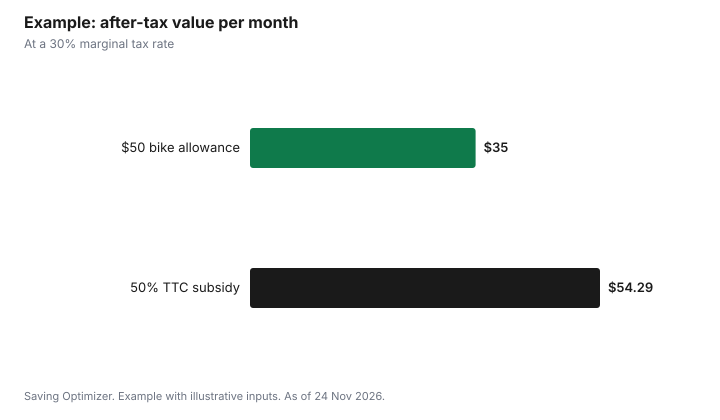

Transportation · Canada
Bike Allowance vs Transit Subsidy: How Canadian Employees Can Compare Employer Options

When your employer offers a choice between a bike allowance, a transit subsidy or a parking spot, compare what each is worth after tax, and pick what matches how you really get to work. CRA generally taxes all three. In this example, at a 30% tax rate, a $50 bike allowance is worth $35 a month and a 50% TTC subsidy is worth $54.29.
Key takeaways
- CRA: benefits and allowances are generally taxable unless an exception applies (checked 24 Nov 2026).
- Employer parking is generally a taxable benefit at fair market value.
- TTC fare capping caps adults at $155.10 a month.
- Example at 30% tax: $50 bike allowance = $35; 50% TTC subsidy = $54.29.
- Seasonal riders may want a flexible option.
Compare the options
| Option | Usually taxable? | Best for |
|---|---|---|
| Cash bike allowance | Generally yes | Year-round riders |
| Transit subsidy | Generally yes | Daily transit riders |
| Parking stall | Generally yes, at fair market value | Drivers who must drive |
| Flexible commuter allowance | Generally yes | Hybrid or seasonal commuters |
Questions to ask payroll
- "Is this allowance or subsidy reported on my T4?"
- "Can I switch between bike and transit by season?"
- "Does the bike option include secure storage and showers?"
- "If I give up a parking stall, can I get a transit or bike amount instead?"

After-tax value: an example
Example at a 30% marginal tax rate: a $50 monthly bike allowance is worth $35 after tax. A 50% subsidy on the $155.10 TTC cap is $77.55, or $54.29 after tax. Riders who bike in summer and take transit in winter might ask to switch by season.
See employer parking as a taxable benefit and employer transit subsidies.
Sources
- Canada Revenue Agency, T4130 Employers' Guide – Taxable Benefits and Allowances, checked 24 Nov 2026.
- Canada Revenue Agency, Parking (payroll benefits), checked 24 Nov 2026.
- TTC, Monthly fare capping, checked 24 Nov 2026.
Frequently asked questions
Is a bike allowance taxable in Canada?
CRA says allowances are generally taxable unless a specific exception applies. Ask payroll.
Is an employer transit subsidy taxable?
Generally yes. Ask payroll how it's reported.
Is free parking at work taxable?
CRA generally treats it as a taxable benefit at fair market value, with some exceptions.
How do I compare employer commute options?
Compare after-tax value and match the option to how you actually commute.
Can I switch options by season?
Some employers allow it. Ask.
Researched and drafted with AI assistance and fact-checked against official Canadian sources. How we create content.
Note: Not tax advice; ask payroll or a tax professional. Amounts are examples. Education only.